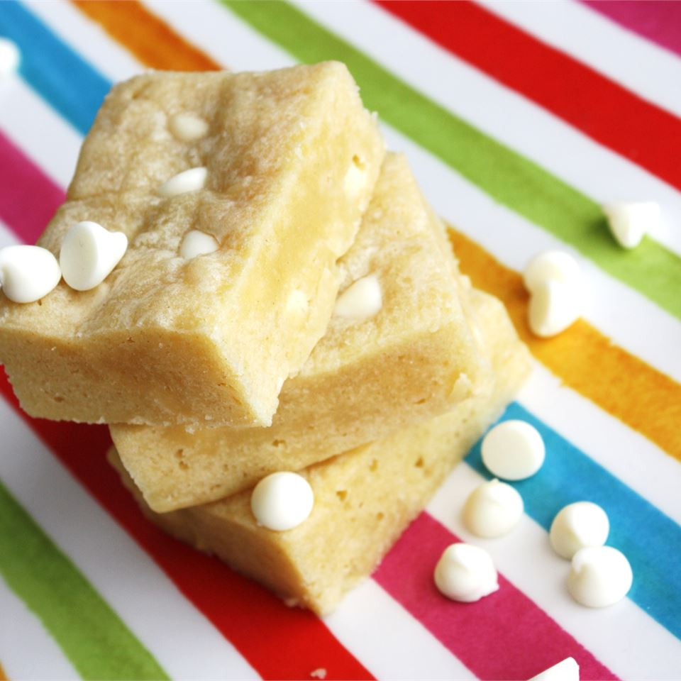

White Chocolate Blondies

These bars have become an office favorite -- they are naughty but OH SO NICE!
Ingredients
- 8 ounces white chocolate, chopped
- 1 tablespoon vanilla extract
- ½ cup butter, softened
- 1 ¼ cups all-purpose flour
- 2 eggs
- ¾ teaspoon salt
- ⅓ cup white sugar
- 1 cup semisweet chocolate chips
Steps
- Preheat oven to 350 degrees F (175 degrees C). Grease a 9x9 inch baking pan. Melt white chocolate and butter in the top of a double boiler, over barely simmering water. Stir occasionally until smooth. Set aside to cool.
>
- In a large bowl, using an electric mixer, beat eggs until foamy. With the mixer still running, gradually add the sugar and vanilla. Drizzle in the melted white chocolate mixture. Combine the flour and salt; fold into the white chocolate mixture using a rubber spatula or wooden spoon. Fold in chocolate chips. Spread the batter evenly into the prepared pan.
- Bake for 25 minutes in the preheated oven, or until a toothpick inserted in the middle comes out clean. Cool pan on a wire rack before cutting into bars.